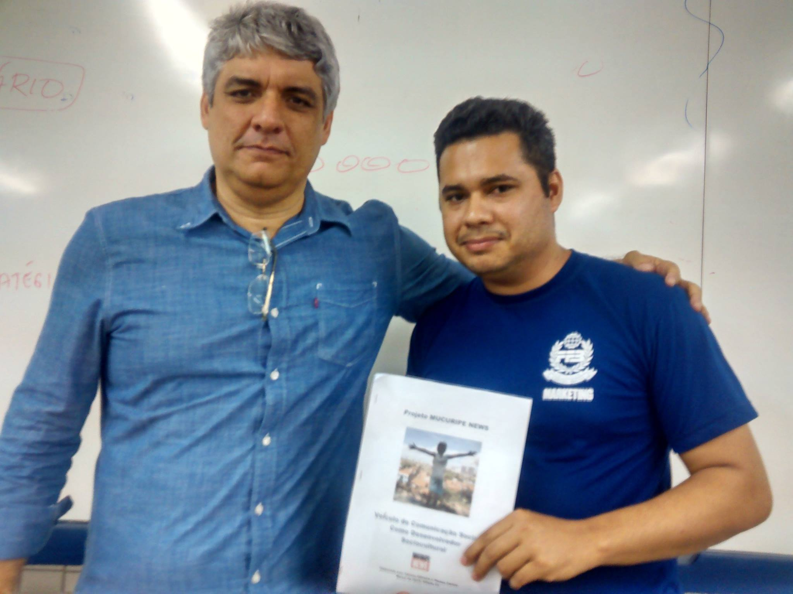

AO-FOTO-014 · MUCURIPE NEWS / FORMAÇÃO
Apresentação do Projeto Mucuripe News — Farias Brito
O arquivo histórico identifica o registro como apresentação do Projeto Mucuripe News na Faculdade Farias Brito. A relação acadêmica com a instituição é corroborada; a data e o evento da fotografia continuam abertos.

HIPÓTESE DOCUMENTAL
Do território ao ambiente acadêmico.
A fotografia sugere uma apresentação formal do projeto em ambiente acadêmico. Essa leitura é mantida como contexto provável, não como marco datado, até surgir documentação contemporânea do evento.